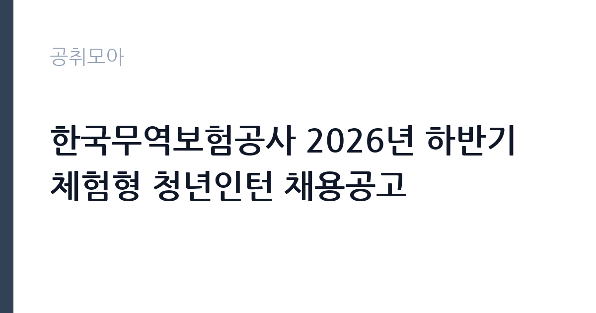

[공공기관] 한국무역보험공사 2026년 하반기 체험형 청년인턴 채용공고
한국무역보험공사 · 서울 · 마감 2026-10-07 (D-15) · 출처 잡알리오

한눈에 보는 모집 조건
| 기관 | 한국무역보험공사 |
|---|---|
| 공고명 | 한국무역보험공사 2026년 하반기 체험형 청년인턴 채용공고 |
| 고용형태 | 청년인턴(체험형) |
| 근무지 | 서울 |
| 게시일 | 2026-09-23 |
| 마감일 | 2026-10-07 (D-15) |
지원자격, 이렇게 읽으세요
- 공공기관 채용공시
- 세부 조건은 원문 공고문 확인
공통 자격은 학력과 성별, 전공에 제한이 없으며, 마감일 기준 18세 이상 34세 이하인 분입니다. 제대군인은 관련법에 따라 응시연령 상한이 연장됩니다. 우리 공사에서 체험형 청년인턴으로 근무한 경험이 없는 분만 지원하실 수 있으니 유의하시기 바랍니다. 모든 채용전형과 연수에 참여할 수 있고 12월 중 채용 시부터 전일 근무가 가능해야 합니다. 취업지원대상자와 장애인, 자립준비청년 전형의 세부 요건은 보훈 관계법률과 장애인고용법, 아동복지법의 기준에 따르므로 원문에서 확인하시기 바랍니다.
이 공고의 포인트
첫 번째 포인트는 전형이 세분화되어 있다는 점입니다. 일반전형 외에 보훈과 장애, 자립준비청년 전형이 별도로 운영되어 해당 조건의 지원자는 경쟁 부담을 낮출 수 있습니다. 두 번째로 한국무역보험공사는 하반기 일반직 신입사원 채용도 함께 진행하는 기관이라, 인턴 경험이 향후 입사 지원 시 직무 이해를 보여주는 자산이 될 수 있습니다. 실제로 공사 신입 채용에서는 체험형 인턴 수료자에게 가점을 주는 제도가 운영되고 있습니다. 세 번째로 무역보험이라는 특화 금융을 경험할 수 있는 자리는 다른 기관에서 찾기 어렵습니다.
전형은 어떻게 진행되나
전형은 서류전형과 면접전형으로 진행되는 것이 일반적이며, 세부 일정은 공사 채용 홈페이지의 원문에서 확인하시기 바랍니다. 접수 기간은 9월 말부터 10월 7일까지로 약 2주간입니다. 서류전형에서는 지원서와 자기소개서의 완성도가 중요하며, 면접에서는 무역보험에 대한 관심과 조직 적응력을 평가합니다. 12월 중 근무 시작이므로 합격자 발표 후 입사까지 일정에 여유가 있습니다. 채용 홈페이지의 공지와 FAQ를 수시로 확인하시기 바랍니다.
원문에서 확인한 전형 방식
<공통> ㅇ 학력, 성별, 전공 제한 없음 ㅇ 채용공고 마감일('26.10.7자) 기준 18세 이상 34세 이하인 자 * 제대군인에 대해서는 관련법에 의거 응시연령 상한 연장 ㅇ 우리 공사 체험형 청년인턴으로 근무한 경험이 없는 자 ㅇ 공사 내규상 채용결격사유에 해당하지 않는 자(첨부파일 [첨부4] 채용결격사유 참조) ㅇ 모든 채용전형, 연수에 참여가 가능하고 채용 시('26.12월중)부터 전일 근무가 가능한 자 <취업지원대상자(보훈)> ㅇ 「국가유공자 등 예우 및 지원에 관한 법률」등 보훈 관계법률에 의한 취업지원대상자 <장애인> ㅇ 「장애인고용촉진 및 직업재활법」에 의한 장애인 <자립준비청년> ㅇ 「아동복지법」에 따른 아동복지시설·가정위탁 보호종료 등에 따른 자립지원 대상자
이런 분께 추천해요
- 무역보험과 수출지원 금융 분야에 관심 있는 만 34세 이하 청년
- 공사 인턴 경험이 없고 12월부터 전일 근무가 가능하신 분
- 향후 공사 신입사원 채용을 목표로 직무 경험을 쌓으려는 구직자
지원 전 체크리스트
- 마감일 기준 18세 이상 34세 이하 연령 요건을 충족하는지 확인했습니다
- 공사 체험형 인턴 근무 경험이 없음을 확인했습니다
- 12월 중 전일 근무와 모든 전형·연수 참여가 가능한지 확인했습니다
- 본인에게 맞는 전형(일반·보훈·장애·자립준비청년)을 선택했습니다
모집 일정과 제출 타이밍
마감일은 2026년 10월 7일입니다. 접수 기간이 약 2주로 비교적 여유가 있으나, 자기소개서 작성에 시간을 들이시기 바랍니다. 서류와 면접 전형을 거쳐 12월 중에 근무를 시작하는 일정이므로, 하반기 학사 일정이나 다른 전형과 겹치지 않는지 미리 점검하시기 바랍니다. 제대군인은 연령 상한 연장 적용 여부를 원문에서 확인하시기 바랍니다. 합격자 발표 일정은 공사 채용 홈페이지의 공지를 통해 확인하시기 바랍니다.
직무 이해하기: 공공기관
체험형 청년인턴은 공사의 각 부서에 배치되어 무역보험 관련 실무를 보조합니다. 조사·인수와 대외거래 리스크 분석, 해외수입자 신용조사 지원 등 무역보험 고유 업무를 가까이에서 접할 수 있습니다. 공사는 무역보험 전 분야에서 영어를 활용하므로, 어학 역량을 발휘할 기회도 있습니다. 서울 종로에 위치한 본사에서 근무하게 되며, 공공기관 카테고리 공고입니다.
자기소개서 작성 팁
자기소개서에서는 무역보험공사와 무역보험 제도에 대한 관심을 구체적으로 보여주시기 바랍니다. 수출 중소기업 지원이나 대외 리스크 관리 같은 공사의 역할과 본인의 전공·경험을 연결하면 설득력이 높아집니다. 체험형 인턴으로서 배우고 기여하겠다는 자세를 중심으로 서술하시기 바랍니다. 지원 전형(일반·보훈·장애·자립준비청년)에 맞는 본인의 배경도 자연스럽게 기술하시기 바랍니다.
면접 준비 포인트
면접에서는 지원 동기와 무역보험에 대한 이해를 질문받을 가능성이 큽니다. 공사의 주요 사업과 최근 뉴스를 미리 살펴보고 본인의 견해를 정리해 두시기 바랍니다. 체험형 인턴으로서의 각오와 배우려는 자세를 명확히 전달하시기 바랍니다. 영어 활용 업무에 대한 질문이 나올 수 있으니 어학 역량도 정리해 두시기 바랍니다. 밝고 적극적인 태도로 임하시기 바랍니다.
급여·근무조건 읽는 법
보수 수준은 원문 공고문에서 확인하셔야 합니다. 공사의 체험형 청년인턴 보수는 내규에 따른 월 지급액이 적용되며, 세부 금액과 지급 조건은 공사 채용 홈페이지의 원문에서 확인하시기 바랍니다. 과거 상반기 인턴 공고에서도 유사한 조건으로 운영된 바 있으나, 이번 하반기 공고의 정확한 금액은 원문을 기준으로 판단하시기 바랍니다. 4대 보험 적용 여부와 근무시간, 연수 기간의 처우도 원문에서 함께 살펴보시기 바랍니다.
자주 묻는 질문
- 체험형 인턴의 근무 시작 시기는 언제입니까
12월 중 채용 시부터 전일 근무가 가능한 분을 대상으로 합니다. 정확한 임용일과 근무 기간은 원문 공고문에서 확인하시기 바랍니다. - 공사 인턴 경험이 있어도 지원할 수 있습니까
우리 공사에서 체험형 청년인턴으로 근무한 경험이 있는 분은 지원하실 수 없습니다. 타 기관 인턴 경험은 제한 대상이 아니므로 원문에서 확인하시기 바랍니다. - 인턴 수료자에게 혜택이 있습니까
공사의 신입사원 채용에서는 체험형 인턴 수료자에게 가점을 주는 제도가 운영되고 있습니다. 유효 기간 등의 세부 조건은 신입 채용 공고에서 확인하시기 바랍니다.
함께 보면 좋은 공고
[공공기관] 한국연구재단 PM(기초연구본부장) 초빙 재공고 — 마감 2026-10-13[공공기관] 칠곡경북대학교병원 2026년 9월 5차 임시직원 채용공고(물리치료사, 간호사, 주차, 조경관리) — 마감 2026-09-28[공공기관] [KDI국제정책대학원] 2026년 제10차 인턴직원 채용(경영기획) — 마감 2026-10-08출처: 잡알리오 공개정보를 바탕으로 공취모아가 정리한 안내글입니다. 모집 조건·일정은 변경될 수 있으니 지원 전 반드시 원문 공고문을 확인하세요. 본 글은 정보 제공용이며 합격을 보장하지 않습니다.